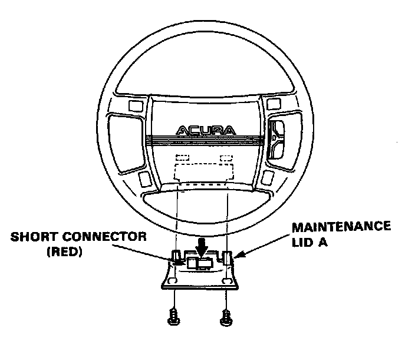
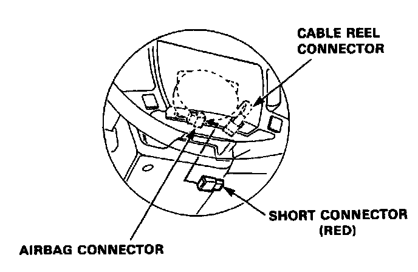
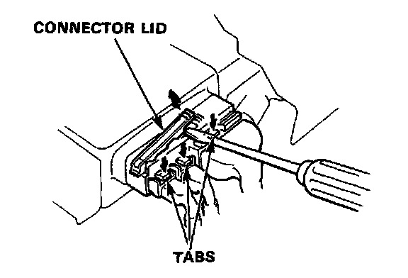
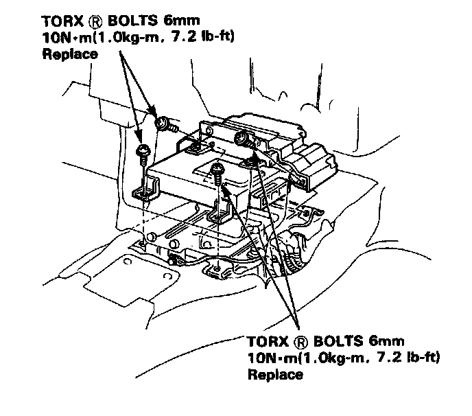
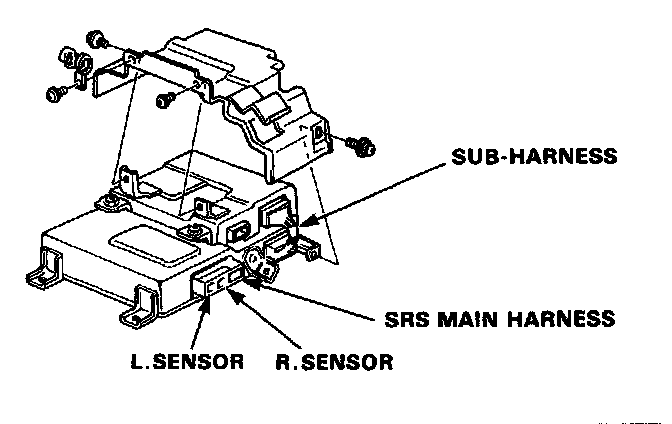

SRS Unit Assembly Removal
SRS Unit Assembly Removal
CAUTION:
- Always keep the short connector on the airbag connector when the harness is disconnected.
- Do not damage the pins of connectors.
- No serviceable parts inside.
- Do not disassemble or tamper.
- Store in a clean, dry area.
- Do not use any SRS unit which has been subjected to water damage or shows signs of being dropped or improperly handled, such as dents, cracks or deformation.
1. Disconnect both the negative cable and positive cable from the battery.

Maintenance Lid A
2. Remove maintenance lid A below the airbag, then remove the short connector.
3. Disconnect the connector between the airbag and cable reel.
4. Connect the short connector to the airbag side of the connector.

Short Connector
5. Remove the front console.
6. Disconnect the SRS unit connectors (3).
NOTE The connectors are double-locked. To remove them first, lift the connector lid with a thin screwdriver, then press the connector tab down and pull the connector out.

SRS Unit Connector Lid
7. Remove the SRS unit mounting bolts (4).


8. Pull out the SRS unit.